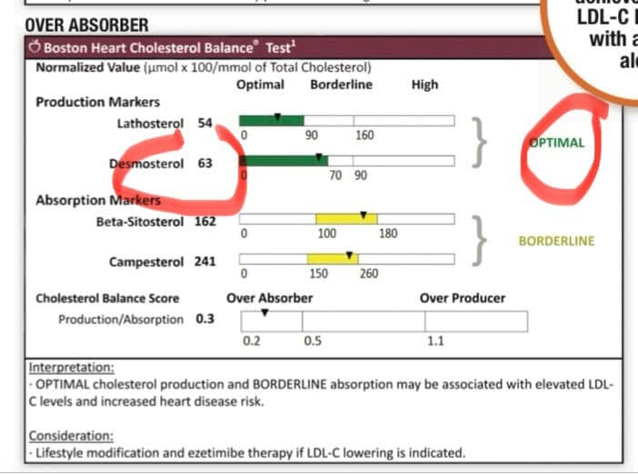

This is one of about two dozen suspicious claims from Peter Attia that I have spent genuine time and effort looking into. Like the others, I found that is pure BS. It is made up nonsense with zero credible evidence base.
Several people in the group have brought up this desmosterol blood test from Boston Heart.
bostonheartdiagnostics.comCBT Treatment Algorithm 160108.pdfbostonheartdiagnostics.com
As far I can tell, it seems like an excellent way for the average patient to waste their money.
——
Desmosterol is a marker for cholesterol production in the body. People with higher desmosterol levels produce more LDL than people with lower levels.
Boston Heart markets the test as a way to predict which people will respond better to statins. The idea is that people with higher desmosterol levels will respond better to statins since they naturally produce more LDL— and, statins work by lowering LDL production.
(The whole idea behind this marketing is kind of stupid, since you can easily tell whether or not you respond well to statins by just trying them. You don’t need an expensive blood test to determine this.)
Strangely, what seems to have happened is that healthy people are now actually using the test as some kind of half-assed measure of risk for one day developing Alzheimer’s.
There are observational studies that show that as Alzheimer’s disease gets worse, desmosterol levels decrease. This of course smacks of reverse causality, but nevertheless, there is now an established inverse association between desmosterol blood levels and severity of Alzheimers disease.
Here’s where it gets weird.
There really is no literature suggesting that healthy people with low desmosterol are at higher risk for dementia. In fact, it’s exactly the opposite. The literature suggests that healthy people with HIGH desmosterol are at higher risk for dementia. See the 2023 study below, as an example.
Paper · iScience · 2023Plant sterols and cholesterol metabolism are associated with five-year cognitive decline in the elderly population.Dysregulations in cholesterol metabolism are associated with neurodegenerative and vascular pathologies, and dementia. Diet-derived plant sterols (phytosterols) have cholesterol-lowering, anti-inflammatory, and antioxidant properties and may interfere with neurodegeneration and cognitive decline. Here we performed multivariate analysis in 720 individuals enrolled in a population-based prospective study to determine…ncbi.nlm.nih.gov
The observation that high desmosterol raises risk for dementia in healthy people makes perfect sense, because people with higher desmosterol will produce a lot more LDL— and we now know that high LDL is likely a causal risk factor for dementia as well as atherosclerosis. Heart disease and dementia are inextricably linked.
Boston Heart writes in their own marketing material for the test that lower desmosterol is optimal and higher desmosterol is associated with greater risk for cognitive decline with aging. See screenshots.
Here’s where it gets REALLY weird.
Statins might lower desmosterol in a small minority of patients taking them. So the weirdest part of all of this is that people are now claiming online that if you are a healthy person on a statin then you are increasing your risk for Alzheimer’s because your desmosterol levels might be going down. They recommend getting this test from Boston Heart.
But as already mentioned, the literature shows that this drop in desmosterol in healthy people is associated with LOWER risk of dementia. And Boston Heart’s own marketing material says lower desmosterol is optimal and higher desmosterol is associated with greater risk for cognitive decline! Again, see screen shots.
—-
The bottom line is that unless you have Alzheimer’s or MCI that is likely to progress into Alzheimer’s— or are at very high risk of developing them fairly soon— this desmosterol test seems like a complete waste of money.
#desmosterolHD #bostonheartHD #dayspringHD #peterattiaHD #statinsHD #statinsdementiaHD #ldldementiaHD #alzheimersHD #dementiaHD

